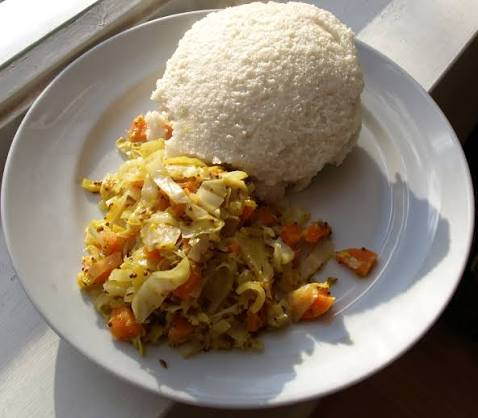

Jollof Rice
Jollof Rice is cooked in a rich sauce of tomatoes, onions, peppers and spices. It is popular in countries such as Nigeria, Ghana and Senegal, where different versions are enjoyed.
Discover the foods enjoyed across Africa, from Rwanda's cassava leaf dishes and flour-based staples to West Africa's tomato-rich rice dishes. Learn about the ingredients, cooking methods and traditions behind them.
Jollof Rice is cooked in a rich sauce of tomatoes, onions, peppers and spices. It is popular in countries such as Nigeria, Ghana and Senegal, where different versions are enjoyed.

Isombe is a Rwandan dish made from cassava leaves that are cooked until soft and often mixed with groundnuts. It is commonly eaten with beans, rice or a flour-based staple.

Ubugari is a firm Rwandan staple prepared by mixing cassava flour with hot water and stirring until smooth. It is usually served alongside vegetables, beans or sauces.

Kawunga is a maize flour dish prepared by gradually mixing flour into boiling water while stirring. It becomes thick and is often eaten with beans, vegetables or meat.
Food traditions differ across Africa. Local crops, climate and cultural practices influence the ingredients and cooking methods used in each region.
Jollof Rice is prepared in several West African countries. Although the recipes differ, tomatoes, peppers, onions and spices give the dish its familiar colour and flavour.
Cassava leaves are the main ingredient in Isombe. They are cooked until tender and may be combined with groundnuts to make a rich dish served with other staples.
Ubugari, Kawunga and Amateke show how cassava, maize and taro are used in Rwandan cooking. These foods are often served with vegetables, beans and sauces.